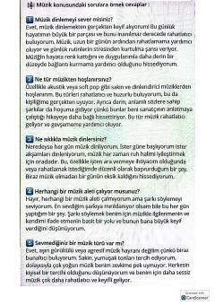

MKMusiqa mavzusida turk tilida suhbatlashish uchun savol-javoblar to'plami.
Ushbu qo'llanma musiqa mavzusidagi savollarga turk tilida qanday javob berish bo'yicha amaliy namunalar va iboralarni o'z ichiga oladi. Kitob musiqa didi, tinglash odatlari va konsertlar haqidagi fikrlarni ifodalash uchun foydali lug'at boyligini taqdim etadi.